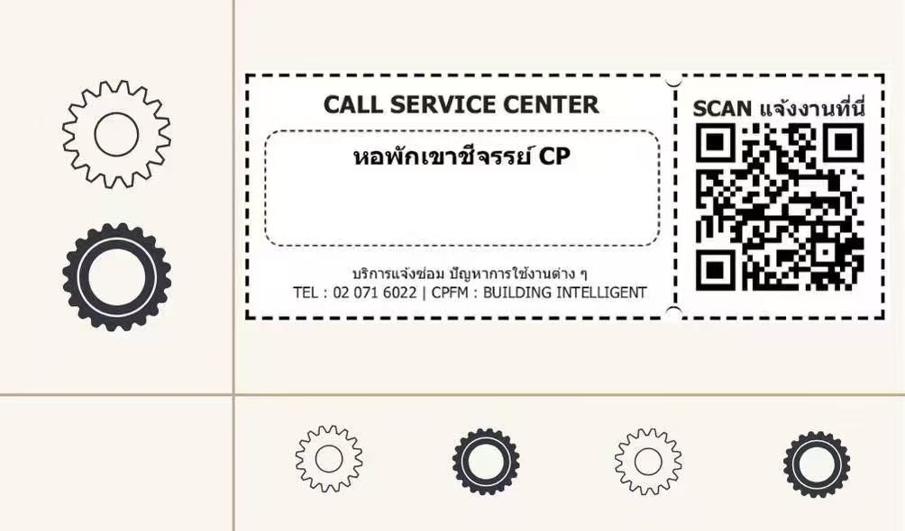

寝室报修

🔧 寝室设施保修须知
如果寝室内出现设施问题（如空调不制冷、灯泡损坏、水龙头漏水、门锁异常等），请按照以下流程及时报修：
- 请使用手机扫描宿舍公告栏或宿管处张贴的保修二维码。
- 进入页面后填写房间号、具体故障情况、以及有效的邮箱或联系电话，以便维修人员联系。
- 提交成功后，学校维修系统会通过邮件回复确认信息。
- 维修人员通常会在1-3个工作日内上门处理，请保持通讯畅通并注意查收邮件通知。
特别提示：人为损坏需自行承担维修费用，非人为损坏由学校负责。若问题长时间未处理，可联系学生事务办公室进行催办。
← 返回主页